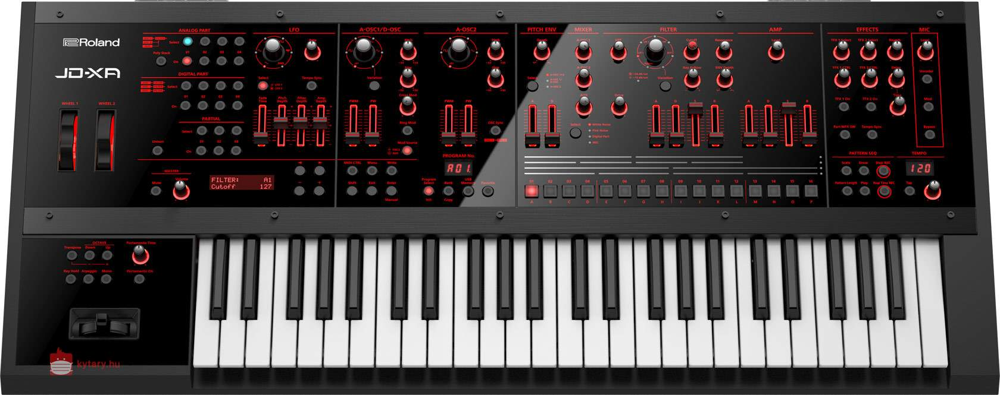
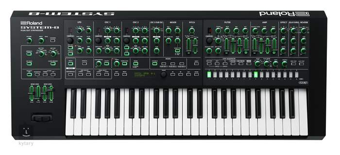
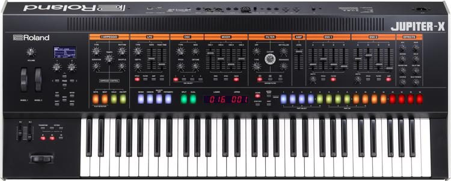

A FANTOM egy új fajta kreatív központ, amely kimondottan a gyors dalíráshoz és a kifejező élő zenéléshez készült.
Az inspiráló beépített eszközök és a széleskörű számítógépes integráció intuitív, természetes és lehetőségekkel teli élményt nyújt.
A bővíthető hangforrás a legjobb elektronikus és akusztikus hangszíneinket tárolja, valamint új, izgalmas lehetőségeket biztosít ezek mélyreható, egyéni beállítására is.
Mindezek mellett prémium minőségű anyagokból készült, formatervezett dizájnnal és a legkiválóbb 61-, 76- és 88-billentyűs mechanikával, melyet valaha gyártottunk.
JD-XA

Roland JD-XA
A JD-XA egy különleges crossover szintetizátor, amely egyesíti a meleg, analóg hangzást és a digitális sokoldalúságot, ebben a páratlan, kreatív hangszerben. Először is, itt van egy 4 Part-os, minden részletében analóg hangforrás, igazi analóg szűrőkkel és egy direkt kimenettel,
valamint egy 4 Part-os SuperNATURAL Synth hanggenerátor és remek effektek széles választéka. A JD-XA hangforrásait egymástól függetlenül és egymással együttműködve is lehet használni, ami hihetetlen rugalmasságot tesz lehetővé a kívánt hangzás megformálásához, legyen szó stúdiómunkákról
vagy fellépésről. Az analóg és digitális Part-ok akár párhuzamosan, akár egymásra helyezve is kombinálhatók elsöprő erejű hangszínek készítéséhez,illetve soha nem tapasztalt hangzások hozhatók létre a digitális hullámformák analóg szűrőkkel történő alakításával.
A JD-XA-val megfeledkezhetsz arról, mi analóg és mi digitális – csak csukd be a szemed, képzeld el milyen hangszínt szeretnél és kezdj el alkotni!
System-8

Roland System-8
A SYSTEM-8 szintézisének architektúrája mélyreható kutatási és fejlesztési eredményeinken alapszik és magában foglalja a klasszikus oszcillátorok, szűrők és effektek autentikus modelljeit.
Ennek köszönhetően, tökéletesen adja vissza a legendás JUPITER-8, JUNO-106 és JX-3P tulajdonságait. A SYSTEM-8 túlmutat a „Vintage” korszakon. Több digitális és analóg felépítésű oszcillátorral is rendelkezik, mint például a Saw, Square, Triangle, SuperSaw, SuperSquare, SuperTriangle, FM, valamint néhány teljesen egyedi hullámforma. A szűrők között megtalálhatod a híres JUPITER és JUNO
szűrőket, valamint olyan modern felépítésű szűrőket is, mint az elragadó Side Band Filter. Ha valaha elképzelted már egy vezérlőkkel telepakolt FM szintetizátor hangját egy JUPITER-8 szűrővel, most meg is hallgathatod.
Jupiter-X

Roland Jupiter-X
A különböző szintetizátor-hanggenerátorok felosztásával, egymásra pakolásával vagy kombinálásával, a sokoldalú SYSTEM-8 páratlan és nagy felbontású vezérlőivel néhány tekeréssel formálható meg a kívánt hangzás. Az új JUPITER-X sorozat a klasszikus Roland dizájnt kombinálja egy kiváló, új hangforrással, amely életre kelti mindazokat a népszerű hangszereket, melyek hangjukkal műfajokat teremtettek az
elmúlt évtizedekben. Több layer, több polifónia és mélyreható vezérlés a telt, nagy kiterjedésű hangzásokhoz, melyek átütően karakteresek, de ugyanakkor melegséget is sugároznak.